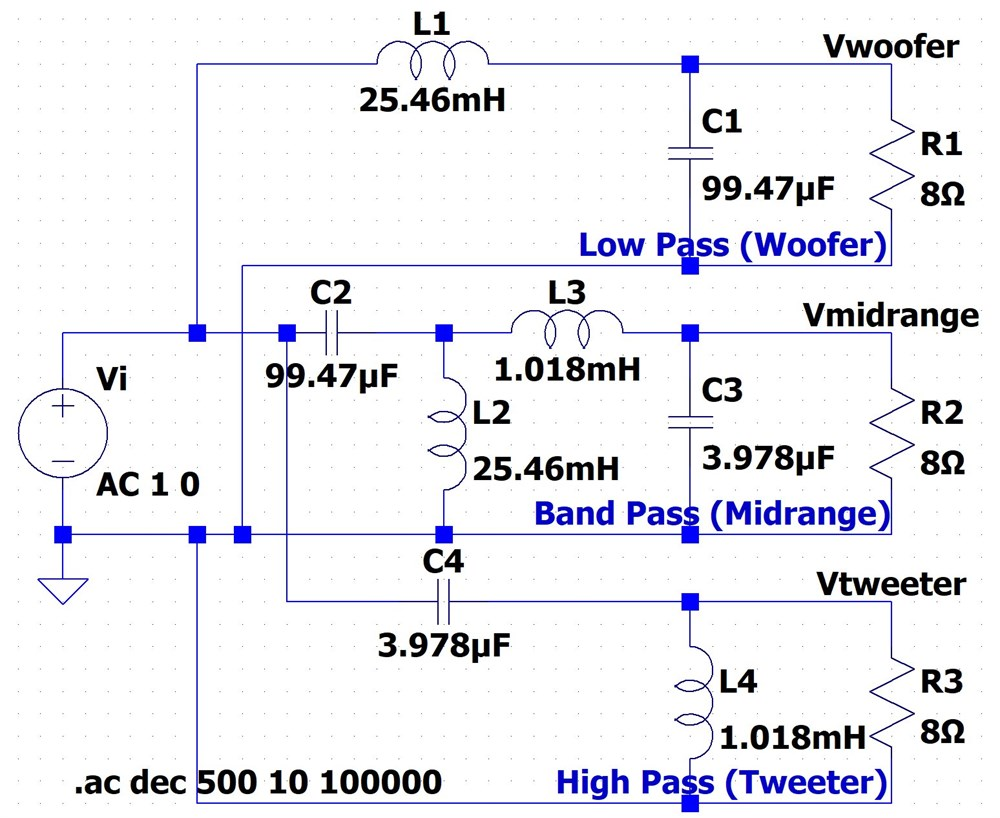
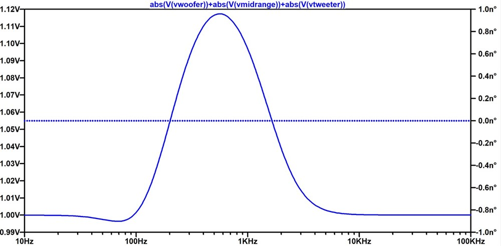

Project · Filter Design & Simulation
Spring 2026 · Principles of EE II
Three-Way Passive Crossover Network
Split audio between a woofer, midrange, and tweeter at 100 Hz and 2.5 kHz, using only inductors and capacitors, since speakers can draw over 100 W.
ToolsMATLAB · LTspice · nodal analysis · Bode plots
- 100 Hz · 2.5 kHzcrossover points
- α = ω₀critically damped, 8 Ω
- ±0.2 Vflat-response spec met
- Individualdesign + simulation


What I did
- Derived each filter's transfer function with nodal analysis, solving the bandpass section in MATLAB.
- Chose critical damping, so each filter is exactly half amplitude at the crossover and neighbors sum to a flat 1 V.
- Checked every section with MATLAB Bode plots, then simulated the full network in LTspice.
My role
Individual project. Design and simulation only; no hardware was built.
Result
Woofer and tweeter landed within 1% of target, and the combined output read 1.00 V and 1.02 V at the crossovers.
What I'd fix
The midrange's upper crossover came out about 4% high, inside the 5% allowance, because its two halves load each other. One component tweak would correct it.